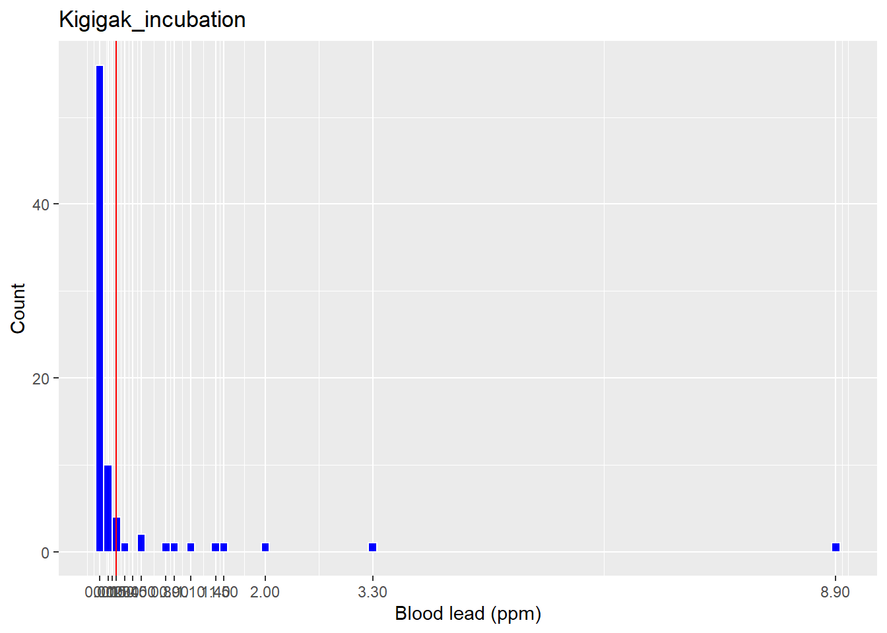
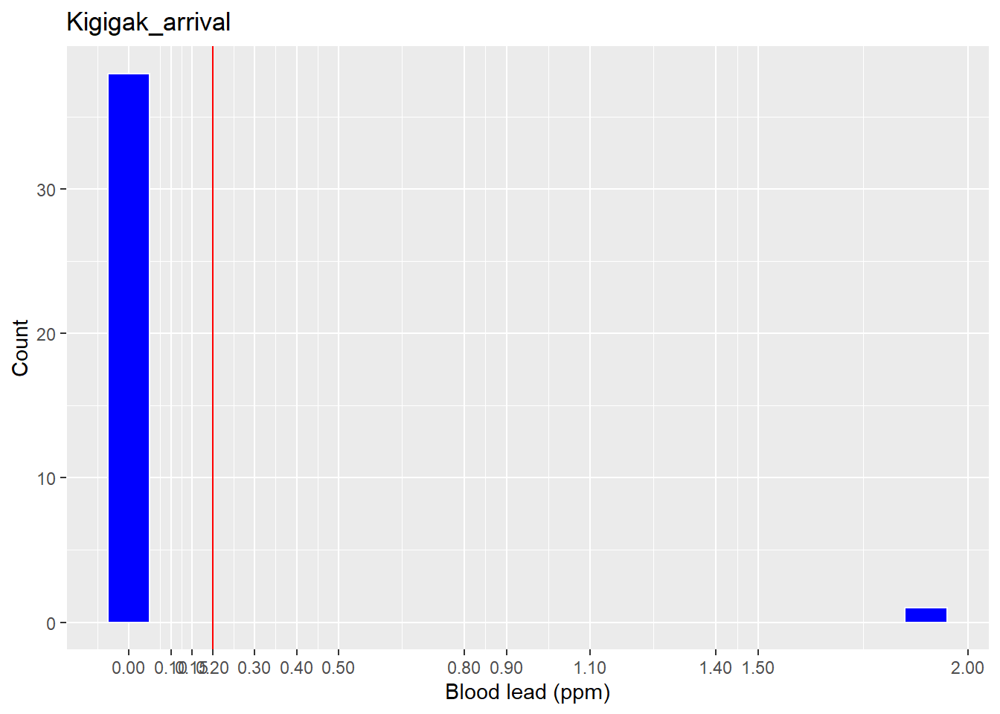
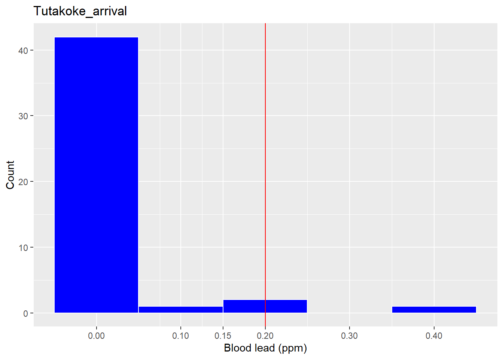
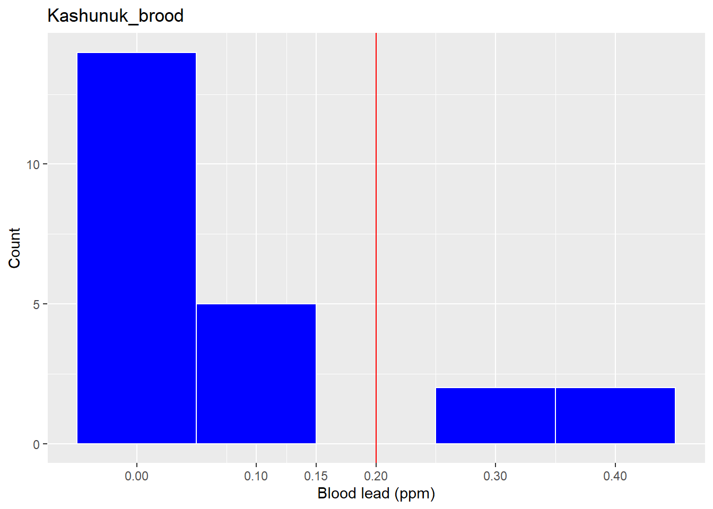
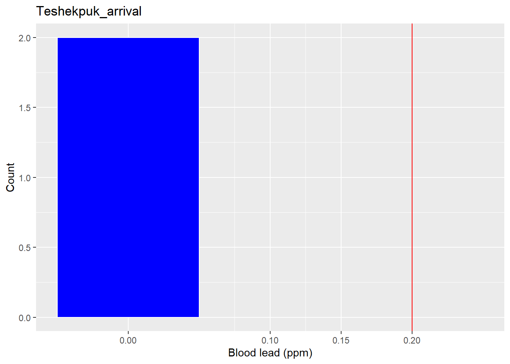

Blood lead levels in eiders captured for FWS projects, 2018-2022
2023-03-02
Last updated: 2023-03-02
Checks: 7 0
Knit directory: spei_lead/
This reproducible R Markdown analysis was created with workflowr (version 1.7.0). The Checks tab describes the reproducibility checks that were applied when the results were created. The Past versions tab lists the development history.
Great! Since the R Markdown file has been committed to the Git repository, you know the exact version of the code that produced these results.
Great job! The global environment was empty. Objects defined in the global environment can affect the analysis in your R Markdown file in unknown ways. For reproduciblity it’s best to always run the code in an empty environment.
The command set.seed(20230217) was run prior to running
the code in the R Markdown file. Setting a seed ensures that any results
that rely on randomness, e.g. subsampling or permutations, are
reproducible.
Great job! Recording the operating system, R version, and package versions is critical for reproducibility.
Nice! There were no cached chunks for this analysis, so you can be confident that you successfully produced the results during this run.
Great job! Using relative paths to the files within your workflowr project makes it easier to run your code on other machines.
Great! You are using Git for version control. Tracking code development and connecting the code version to the results is critical for reproducibility.
The results in this page were generated with repository version 0210201. See the Past versions tab to see a history of the changes made to the R Markdown and HTML files.
Note that you need to be careful to ensure that all relevant files for
the analysis have been committed to Git prior to generating the results
(you can use wflow_publish or
wflow_git_commit). workflowr only checks the R Markdown
file, but you know if there are other scripts or data files that it
depends on. Below is the status of the Git repository when the results
were generated:
Ignored files:
Ignored: .Rhistory
Ignored: .Rproj.user/
Ignored: data/7030169 data.csv
Ignored: data/README_spei_blood_lead_data.txt
Ignored: data/Rizzolo Lead VSEP22-045 E-report.xlsx
Ignored: data/eider_blood_samples_bands_utq_2022.csv
Ignored: data/eider_lead_fws.csv
Ignored: data/eider_lead_fws_2018-2022.csv
Ignored: data/sample_id_spei_blood_lead_2018.csv
Untracked files:
Untracked: analysis/summary_eider_lead_fws.Rmd
Untracked: code/commands_workflowr_spei_lead.R
Untracked: code/create_dataset_spei_lead.R
Untracked: code/workflowr_commands_spei_lead.R
Untracked: temp_test.Rmd
Untracked: temp_test.html
Unstaged changes:
Modified: .gitignore
Modified: _workflowr.yml
Note that any generated files, e.g. HTML, png, CSS, etc., are not included in this status report because it is ok for generated content to have uncommitted changes.
These are the previous versions of the repository in which changes were
made to the R Markdown (analysis/map_eider_lead_fws.Rmd)
and HTML (docs/map_eider_lead_fws.html) files. If you’ve
configured a remote Git repository (see ?wflow_git_remote),
click on the hyperlinks in the table below to view the files as they
were in that past version.
| File | Version | Author | Date | Message |
|---|---|---|---|---|
| Rmd | 0210201 | DJRIZZ | 2023-03-02 | added histograms with 0.15 bin and increased jitter |
| html | 27d6117 | DJRIZZ | 2023-03-02 | Build site. |
| Rmd | 90104d4 | DJRIZZ | 2023-03-02 | added histograms |
| html | 9945a5b | DJRIZZ | 2023-03-01 | Build site. |
| Rmd | e477ff7 | DJRIZZ | 2023-03-01 | added histograms |
| html | 0c796bf | DJRIZZ | 2023-02-28 | Build site. |
| Rmd | 4d86e5c | DJRIZZ | 2023-02-28 | added summary table |
Plotted data
Capture locations of eiders (mostly Spectacled Eiders, but also 2 King Eiders on the ACP and 1 Common Eider at Kigigak) tested for blood lead levels. Blue symbols are individuals < 0.2 ppm lead. Red symbols are >= 0.20 ppm. Circle size is scaled to lead concentration. Hover your cursor over points to get associated info.
eider_lead_fws <- read.csv("data/eider_lead_fws.csv", header = TRUE)
# sort by lat and lon to jitter overlapping points
eider_lead_fws <- eider_lead_fws[order(eider_lead_fws$lat, eider_lead_fws$lon), ]
# jitter lat for captures at same capture site
lat_jit <- ifelse(diff(eider_lead_fws$lat) < 0.001, eider_lead_fws$lat + 0.0015, eider_lead_fws$lat)
lat_jit[206] <-eider_lead_fws[206, 7]
eider_lead_fws$lat_jit <- lat_jit
lon_jit <- ifelse(diff(eider_lead_fws$lon) < 0.001, eider_lead_fws$lon + 0.0015, eider_lead_fws$lon)
lon_jit[206] <-eider_lead_fws[206, 8]
eider_lead_fws$lon_jit <- lon_jit
# map to check locations
m <- leaflet() %>%
#setView(lng = -170, lat = 63.5, zoom = 6) %>%
addProviderTiles("Esri.WorldImagery", group = "Satellite") %>%
addCircles(data = eider_lead_fws,
~ lon_jit,
~ lat_jit,
color = ifelse(eider_lead_fws$pb_wet_ppm < 0.20, "blue","red"),
radius = ~ pb_wet_ppm * 100,
#group ="FourWeeks",
label = paste("ID:", eider_lead_fws$band_metal, "<br>",
"Sample Date:", eider_lead_fws$date_capture, "<br>",
"Species:", eider_lead_fws$species, "<br>",
"Sex:", eider_lead_fws$sex, "<br>",
"Age:", eider_lead_fws$age, "<br>",
"Pb:", eider_lead_fws$pb_wet_ppm) %>%
lapply(htmltools::HTML)
)
mLead Exposure Rates
# subset SPEI
lead_spei <- subset(eider_lead_fws, species == "SPEI")
# create indicator variable for lead levels <= 0.20
lead_spei$exposed <- ifelse(lead_spei$pb_wet_ppm >= 0.20, 1,0)
lead_spei$notexp <- ifelse(lead_spei$pb_wet_ppm <= 0.20, 1,0)
# aggregate by site and period
lead_spei_exp <- aggregate(lead_spei$exposed ~ lead_spei$site_study*lead_spei$capture_period, FUN = "sum")
lead_spei_notexp <- aggregate(lead_spei$notexp ~ lead_spei$site_study*lead_spei$capture_period, FUN = "sum")
# cbind
lead_table <- cbind.data.frame(lead_spei_exp[1:3], lead_spei_notexp[3])
colnames(lead_table) <- c("Study site", "Status", "No. exposed", "No. unexposed")
# calc prop exp
lead_table$`Proportion exposed` <- as.numeric(lead_table$`No. exposed`/(lead_table$`No. exposed`+lead_table$`No. unexposed`))
lead_table[ , 5] = round(lead_table[ ,5], 2)
# sort
lead_table <- lead_table[order(lead_table$`Study site`, lead_table$Status, decreasing = FALSE), ]
# Table formatting in Kable package
t1<-kbl(lead_table[ ,1:5], caption="Spectacled Eider blood lead levels above 0.20 ppm (exposed) and below 0.20 ppm (unexposed) from samples collected on the Yukon-Kuskokwim Delta and Arctic Coastal Plain, Alaska, 2018-2022.")
kable_styling(t1,bootstrap_options="striped", full_width=FALSE, position="center")| Study site | Status | No. exposed | No. unexposed | Proportion exposed | |
|---|---|---|---|---|---|
| 1 | Kashunuk | broodrearing | 4 | 19 | 0.17 |
| 2 | Kigigak | incubation | 13 | 68 | 0.16 |
| 4 | Kigigak | prebreeding | 1 | 38 | 0.03 |
| 5 | Teshekpuk | prebreeding | 0 | 2 | 0.00 |
| 6 | Tutakoke | prebreeding | 2 | 45 | 0.04 |
| 3 | Utqiagvik | incubation | 0 | 3 | 0.00 |
| 7 | Utqiagvik | prebreeding | 0 | 9 | 0.00 |
Histograms
Spectacled Eider blood lead concentration by site and capture period
# create site-capture period variable for partitioning data for histograms
lead_spei$site_stage <- paste(lead_spei$site_study, lead_spei$capture_period, sep = "_")
# create histograms
for(var in unique(lead_spei$site_stage)){
print(ggplot(lead_spei[lead_spei$site_stage==var,], aes(pb_wet_ppm)) +
geom_histogram(binwidth = 0.1,
color = "white",
fill = "blue") +
# put x-axis labels where there are values
scale_x_continuous(name = "Blood lead (ppm)", breaks = c(0.0, 0.15, 0.1, 0.2, 0.3, 0.4, 0.5, 0.8, 0.9, 1.1, 1.4, 1.5, 2.0, 3.3, 8.9)) +
scale_y_continuous(name = "Count") +
geom_vline(xintercept = 0.20, color = "red") + # line at level interpreted as indicating exposure
ggtitle(label = var)
)
}
sessionInfo()R version 4.2.2 (2022-10-31 ucrt)
Platform: x86_64-w64-mingw32/x64 (64-bit)
Running under: Windows 10 x64 (build 22621)
Matrix products: default
locale:
[1] LC_COLLATE=English_United States.utf8
[2] LC_CTYPE=English_United States.utf8
[3] LC_MONETARY=English_United States.utf8
[4] LC_NUMERIC=C
[5] LC_TIME=English_United States.utf8
attached base packages:
[1] stats graphics grDevices utils datasets methods base
other attached packages:
[1] kableExtra_1.3.4 forcats_0.5.2 stringr_1.5.0 dplyr_1.1.0
[5] purrr_1.0.1 readr_2.1.4 tidyr_1.3.0 tibble_3.1.8
[9] ggplot2_3.4.1 tidyverse_1.3.2 leaflet_2.1.1 workflowr_1.7.0
loaded via a namespace (and not attached):
[1] httr_1.4.4 sass_0.4.2 viridisLite_0.4.1
[4] jsonlite_1.8.4 modelr_0.1.9 bslib_0.4.2
[7] assertthat_0.2.1 getPass_0.2-2 googlesheets4_1.0.1
[10] cellranger_1.1.0 yaml_2.3.7 pillar_1.8.1
[13] backports_1.4.1 glue_1.6.2 digest_0.6.31
[16] promises_1.2.0.1 rvest_1.0.3 leaflet.providers_1.9.0
[19] colorspace_2.1-0 htmltools_0.5.4 httpuv_1.6.9
[22] pkgconfig_2.0.3 broom_1.0.3 haven_2.5.1
[25] webshot_0.5.4 scales_1.2.1 svglite_2.1.0
[28] processx_3.8.0 whisker_0.4 later_1.3.0
[31] tzdb_0.3.0 timechange_0.2.0 git2r_0.31.0
[34] googledrive_2.0.0 farver_2.1.1 generics_0.1.3
[37] ellipsis_0.3.2 cachem_1.0.6 withr_2.5.0
[40] cli_3.6.0 magrittr_2.0.3 crayon_1.5.2
[43] readxl_1.4.2 evaluate_0.20 ps_1.7.2
[46] fs_1.6.1 fansi_1.0.4 xml2_1.3.3
[49] tools_4.2.2 hms_1.1.2 gargle_1.2.1
[52] lifecycle_1.0.3 munsell_0.5.0 reprex_2.0.2
[55] callr_3.7.3 compiler_4.2.2 jquerylib_0.1.4
[58] systemfonts_1.0.4 rlang_1.0.6 grid_4.2.2
[61] rstudioapi_0.14 htmlwidgets_1.6.1 crosstalk_1.2.0
[64] labeling_0.4.2 rmarkdown_2.20 gtable_0.3.1
[67] DBI_1.1.3 R6_2.5.1 lubridate_1.9.2
[70] knitr_1.42 fastmap_1.1.0 utf8_1.2.3
[73] rprojroot_2.0.3 stringi_1.7.12 Rcpp_1.0.10
[76] vctrs_0.5.2 dbplyr_2.3.0 tidyselect_1.2.0
[79] xfun_0.37